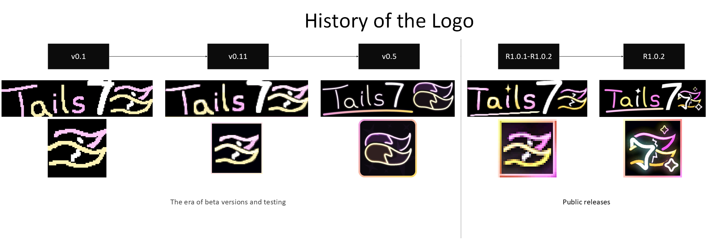

About
Introduction / About (24 June, 2026)
Welcome to the Tails7
Tails7 is a free and open source engine for Clickteam Fusion 2.5+ that allows you to map objects on the screen in Mode 7 style, enabling you to create simulated 3D effects for your games/projects without additional extensions.
History of the Tails7 engine
Around 2022, I first encountered the Mode7ex extension for Multimedia Fusion created by Cellosoft.
This extension allows objects to be mapped on the screen, giving us a three-dimensional effect.
The only problem I had with Mode7ex was optimization, as the extension was last updated about 20 years ago and does not fully uses the GPU.
In late 2022/early 2023, I started making my first shaders for fun.
I liked to insert various multiplications, divisions, and mathematical operations to see how the pixels would behave, but I accidentally made a shader that distorted the texture to give perspective.
I remembered the Mode7ex extension, started exploring the topic of 3D simulation in 2D, and it turned out that I had made something similar to Mode 7.
My attempts to make the first Tails7 prototypes were unsuccessful.
In 2024, around March/April, I tried my hand at Tails7 again and succeeded, but it was only half the battle... the mapping wasn't perfect with the ground shader, and the first versions of "Beta 0.1"/" Beta 0.11" worked on bad calculations, but that didn't stop me from showing the world the demo I made here for the first time.
Around August of that same year, I tried again, but this time I took into account the texCoord calculations from the shader, and it helped. Tails7 began to be a real Mode7 engine.
I was happy with the results, and the combat system for my game began to look like I had planned.
For many months, I wondered whether to publish the Tails7 code or not, whether anyone would use it or not.
At the end of March 2025, Glace Sue came up with the idea of making a Special Stage for her fan game with Sonic, and the goal was to make this Special Stage more like Sonic CD.
I remembered that I had a Mode 7 engine in my game, so why not use it?
On April 20, 2025, I published a post showing a demo of a Sonic CD-like Special Stage created entirely with Tails7.
I wasn't sure about one thing: drawing polygons.
A year ago, I tested walls using shaders created by Sketchy / MuddyMole, but I didn't check what the character model would look like or if there would be any graphical glitches.
When I finished my fursona model, I was sure that Tails7 was ready.
On May 13, I officially released an engine that I am happy with, based on a concept that came about by accident.
The possibility of adding another dimension.
Around May 19, I was supposed to release another patch for Tails7 that would allow the camera to rotate in any axis, but I would have had to update the original documentation, so I postponed it until the following week and then forgot about it.
As I write this note in November, I am working on a huge update and a demo for Doom7.
This is the history of this engine, initially planned only for my game, but ending up as a modern Mode 7 in Clickteam Fusion.

Special thanks for:
- Sketchy / MuddyMole
- Linky
- Glace Sue
- Clickteam
- KYwoo
- PsichiX
- NaitorStudios
Are you interested in what I do? You can find me here
Created with the Personal Edition of HelpNDoc: Generate EPub eBooks with ease